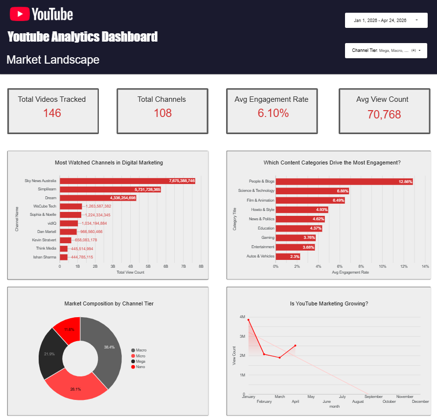

YouTube Marketing Analytics
An automated system that collects data on marketing videos from YouTube every week, cleans and checks it, and feeds a dashboard showing which videos and channels perform best.
Project status: paused. Built in April 2026 and ran on a weekly schedule until June 2026, when the Google Cloud free trial ended. The dashboard still works and shows data up to the last successful run on 3 June 2026.
The question
Marketing content on YouTube is crowded. I wanted to answer: which marketing videos get the most engagement, what do they have in common (length, captions, posting time, tags), and how are the channels behind them growing over time?
Answering that once is easy. Answering it every week, with data you can trust, needs a proper system. That system is what this project is about.
How it works
Data flows left to right. Every step runs automatically each week.

The result
A dashboard that reads from clean, tested tables, so the numbers can be trusted.

Key decisions
The choices that make this a reliable system rather than a one-off script.
Keep the raw data
Raw data is stored first and never edited. If a rule changes later, everything can be rebuilt from the original data.
Check before publishing
Quality tests run before the final tables are built. Bad data stops the run instead of reaching the dashboard.
Track history
Channel stats like subscribers change. The system keeps every version, so growth over time can be measured.
Simple, reusable tables
Final data is organised as a star schema: 3 fact tables and 3 lookup tables that any BI tool can use.
Code highlights
A few short excerpts, each with what it does in plain English. The complete code is on GitHub.
Never load the same day twice
Full file ↗Before loading new data, the script checks whether today's data is already in the warehouse. If it is, it skips it, so re-running the pipeline never creates duplicates.
check_query = f"""
SELECT COUNT(*) as count
FROM `{table_id}`
WHERE DATE(_PARTITIONTIME) = CURRENT_DATE()
"""
result = client.query(check_query).result()
count = next(result).count
if count > 0:
print(f"Skipping {table_name} - already loaded today")
continue
load_job = client.load_table_from_uri(gcs_uri, table_id, job_config=job_config)Turning raw counts into business metrics
Full file ↗Engagement rate = (likes + comments) ÷ views. SAFE_DIVIDE returns an empty value instead of crashing when a video has zero views.
SAFE_DIVIDE(
videos.like_count + videos.comment_count,
videos.view_count
) AS engagement_rate,
SAFE_DIVIDE(
videos.like_count,
videos.view_count
) AS like_to_view_ratio,
DATE_DIFF(
CURRENT_DATE(),
DATE(videos.published_at),
DAY
) AS video_age_daysGrouping channels by size
Full file ↗Each channel gets a tier based on subscribers, so the dashboard can compare small creators with big ones fairly.
CASE
WHEN subscriber_count >= 1000000 THEN 'Mega'
WHEN subscriber_count >= 100000 THEN 'Macro'
WHEN subscriber_count >= 10000 THEN 'Micro'
ELSE 'Nano'
END AS channel_tierKeeping a history of every channel
Full file ↗When any of these columns change (subscribers, views and so on), dbt saves a new version instead of overwriting the old one. This is called "SCD Type 2" and it's what makes growth tracking possible.
{% snapshot snp_youtube_channels %}
{{
config(
unique_key='channel_id',
strategy='check',
check_cols=[
'subscriber_count',
'video_count',
'total_view_count',
'channel_name',
'country',
'keywords'
],
)
}}
SELECT * FROM {{ ref('stg_youtube_channels') }}
{% endsnapshot %}Automation that stops on bad data
Full file ↗The weekly job runs in a careful order: check the data is fresh, build and test the clean layer, and only then build the final tables. Any failure stops the run and triggers an email.
- name: dbt source freshness
run: dbt source freshness
- name: dbt run silver
run: dbt run -s silver
- name: dbt test silver # fail fast
run: dbt test -s silver
- name: dbt snapshot
run: dbt snapshot
- name: dbt run gold
run: dbt run -s gold
- name: dbt test gold
run: dbt test -s gold
- name: Send failure email
if: failure()Data model
How the final tables connect: each step of data refinement, and the star schema the dashboard reads from.


Tools used
- Python to collect data from the YouTube Data API
- Google Cloud Storage to store the raw data
- BigQuery as the data warehouse
- dbt to clean, model, test and document the data
- GitHub Actions to run everything automatically every week
- Looker Studio for the dashboard
Want the technical details?
Setup steps, every model, all 56 tests and full documentation are on GitHub.